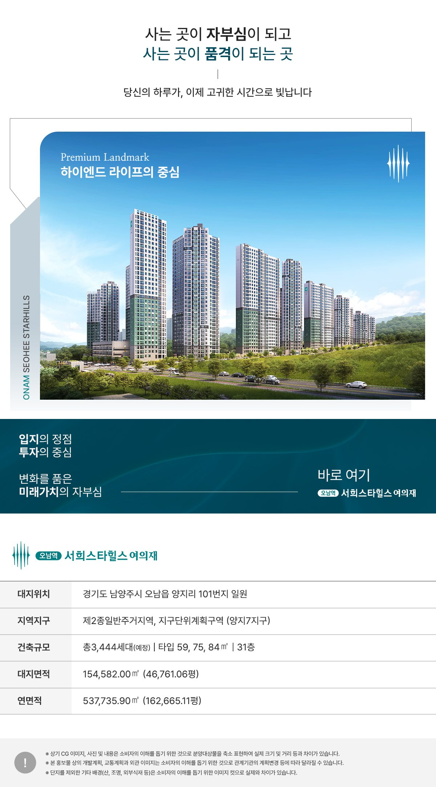
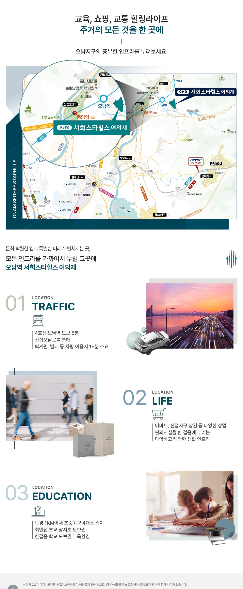

ONAM STATION SEOHEE STARHILLS
오남역
서희스타힐스 여의재
4호선 오남역 초역세권 · 총 3,444세대사는 곳이 자부심이 되고사는 곳이 품격이 되는 곳선착순 동·호 지정 · 서울까지 2정거장
규모최고 31층
세대수총 3,444세대(예정)
타입59·75·84㎡
교통4호선 오남역
SUMMARY
오남역 서희스타힐스 여의재 한눈에 보기
- 경기도 남양주시 오남읍 양지리 101번지 일원 · 4호선 오남역 초역세권
- 양지7지구 1·2·3단지 총 3,444세대(예정) · 최고 31층 · 서희스타힐스
- 전용 59A·59B·75·84㎡ 4BAY 판상형 · 초중고 도보 3분
- 서울까지 단 2정거장 · 서울 주요 업무지구 30분대 · 선착순 동·호 지정
오남역 초역세권
4호선 오남역 · 서울까지 단 2정거장 · GTX-B 등 광역교통
명문학군
초중고 도보 3분 안심학세권 · 양지초 · 오남중 · 오남고
ALL-IN-ONE
단지 내 근린생활시설 · 어린이 놀이터 · 생활 인프라
그린 라이프
자연과 공존하는 하이엔드 그린 라이프 · 단지 내 조경
커뮤니티
3,444세대 대단지 커뮤니티 · 피트니스 · 골프 · 작은도서관
미래가치
양지7지구 개발 · 서울 주요 업무지구 접근성
| 타입 | 전용면적 | 공급면적 | 계약면적 |
|---|---|---|---|
| 59A㎡ | 59.92㎡ | 81.19㎡ | 115.47㎡ |
| 59B㎡ | 59.44㎡ | 81.42㎡ | 115.43㎡ |
| 75㎡ | 74.07㎡ | 98.54㎡ | 141.28㎡ |
| 84㎡ | 84.78㎡ | 111.95㎡ | 160.45㎡ |
오남역 서희스타힐스 여의재 분양 상담 · 분양알리미 대표번호 1688-5650
PROJECT OVERVIEW
사업개요
- 현장명
- 오남역 서희스타힐스 여의재
- 대지위치
- 경기도 남양주시 오남읍 양지리 101번지 일원 (3단지: 양지리 186-10번지 일원)
- 지역지구
- 제2종일반주거지역, 지구단위계획구역(양지7지구)
- 건축규모
- 총 3,444세대(예정) · 최고 31층
- 단지 구성
- 1단지 14개동 1,308세대 · 2단지 10개동 1,080세대 · 3단지 10개동 1,056세대
- 타입
- 59A · 59B · 75 · 84㎡
- 대지면적
- 154,582.00㎡ (46,761.06평)
- 연면적
- 537,735.90㎡ (162,665.11평)
- 시행
- 양지7지구 지역주택조합
- 시공
- 서희건설
사업개요 자세히 보기

LOCATION
오남역 쾌속교통의 중심
교통
4호선 오남역 초역세권 · 서울까지 단 2정거장
업무
서울 CBD · 강남 GBD · 여의도 YBD 30분대
교육
초중고 도보 3분 안심학세권
생활
ALL-IN-ONE 단지 내 근린생활시설

안심학세권
현장 주소경기도 남양주시 오남읍 양지리 101번지 일원
UNIT PLAN
평면안내
4개 타입 평면도
타입을 누르면 해당 도면이 열립니다.
CUSTOMER CONTACT
관심고객 접수
성함과 연락처를 남겨주시면 안내해 드립니다.
오남역 서희스타힐스 여의재 관련 검색어
- 오남역 서희스타힐스 여의재
- 오남 서희스타힐스
- 서희스타힐스 여의재
- 오남역 아파트
- 오남읍 아파트
- 남양주시 아파트 분양
- 오남역 서희스타힐스 여의재 분양가
- 오남역 서희스타힐스 여의재 모델하우스
- 오남역 서희스타힐스 여의재 평면도
오남역 서희스타힐스 여의재 분양 상담 · 대표번호 1688-5650